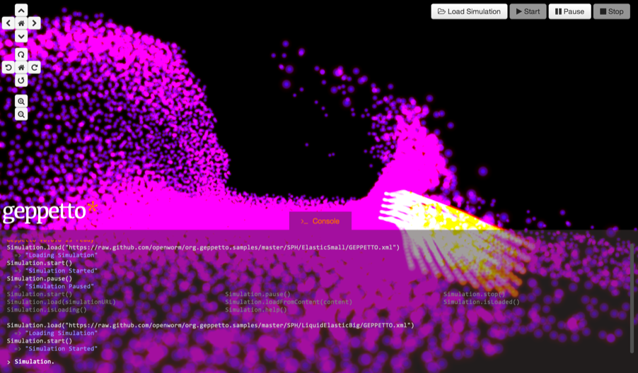

OpenWorm for Scientists
OpenWorm is an open source project dedicated to creating the world’s first virtual organism in a computer, a C.elegans nematode. Throughout the years we have built a network of relationships with with many biologists and neuroscientists interested in C. elegans. Some of these kind colleagues have shared materials in the form of data or models with us for us to build upon, some others have used our output in their own work. This page wants to be an aggregator of our scientific inputs and outputs, and a way to summarize what OpenWorm has to offer to the scientific community.
OpenWorm for Scientists
The OpenWorm project is committed to engaging with the C. elegans scientific community. This page presents the scientific data and resources produced by the OpenWorm community for the benefit of experimental and computational scientists working in this area.
Existing Scientific Collaborations
The entire C. elegans experimental community that assembles at the yearly GSA C. elegans meeting is incredibly welcoming and supportive. We've received data and help from C. elegans biologists including Dr. Sreekanth Chalasani at the Salk Institute, Dr. Michael Francis at UMass Medical School, Dr. William Schafer at University of Cambridge and Dr. Andrew Leifer at Princeton University. We've been inspired and received help on worm simulations from the lab of Dr. Netta Cohen at Leeds University and her students. The original source for many of the 3D images of the worm's body is the Virtual Worm project at WormBase, specifically Dr. Christian Grove at CalTech.
OpenWorm Resources
The OpenWorm project has produced different resources to make it easier to explore the anatomy of the C.elegans.
OpenWorm Documentation

All of the documentation for the project in a single site.
OpenWorm Browser

The OpenWorm browser exposes through a web interface the anatomical model of C.elegans
developed as part of the Virtual Worm project at Caltech. The application allows
pealing different layers of the worm revealing distinct groups for the nervous system,
the muscle cells, the organs and the cuticle. All the cells of the worm are searchable
through the user interface.
OpenWorm Browser (Free web application)
OpenWorm Browser iOS
NeuroML C.elegans Connectome

The team has produced a model of the connectome of the C.elegans in NeuroML,
a standard for describing computational models of neurons and networks.
The model has been generated by post-processing the morphology of the nervous
system available in the Blender file produced by the Virtual Worm project with
an ad-hoc Python script written for this purpose and released in the open-source.
This model is a work in progress and although it represents the first full
multi-compartmental model of the network of an entire organism it still lacks
characterization of the biophysical properties of the neurons. Current efforts
are directed towards integrating the synapses in the model, more informations
about this can be found here. The NeuroML model can be found and explored in
3D through Open Source Brain; OSB Explorer allows scientists to expose the property
of the neurons and navigate their connections by simply clicking on them.
C.elegans connectome on Open Source Brain
Sibernetic

Openworm has been developing Sibernetic, a C++ implementation of the Predictive-corrective
Incompressible Smooth Particle Hydrodynamics (PCI-SPH) algorithm based on the work of Solenthaler.
The algorithm has been extended to model contractile matter and membranes for simulating
the muscle tissue of the C. elegans. The implementation uses OpenCL to distribute the computation
of the particle system on both CPUs and GPUs in a parallelized way.
Sibernetic sources
Sibernetic video
Geppetto

OpenWorm has been developing Geppetto, a web-based multi-algorithm, multi-scale simulation
platform engineered to support the simulation of complex biological systems and their
surrounding environment. The platform aims at integrating multiscale models whose simulation
depends on a variety of algorithms which need to interoperate. Great focus has been put on
the engineering of the platform, aiming at having a robust and generic solution that can be
applied to different class of models. OpenWorm aims to make progresses of the OpenWorm
simulation available to scientist and general public through Geppetto. Geppetto at present
supports a simulator for LEMS, a domain agnostic language specification aimed at describing
dynamic models, and Sibernetic, the fluid dynamics simulator also developed as part of the
project. The visualisation engine of Geppetto has been reused in Open Source Brain Explorer
and allows a variety of neuronal models to be seamlessly visualised in 3D through the web
browser.
Geppetto documentation
Geppetto sources
Geppetto website
Other activities
OpenWorm is contributing the development of computational neuronal models to Open Source Brain. The group page with all the projects can be found here.
External Resources
This is a list of online resources related to C. elegans which we have found useful in the OpenWorm project. If you know of other resources we should include here, please get in contact!
| Resource | Description |
|---|---|
| C. Elegans Ion Channels | Spreadsheet of ion channels |
| WormAtlas | Website with an atlas containing images of worm anatomy |
| WormBase | A comprehensive web-based database of genes, gene expression, proteins, and much more specifically for c. elegans and related species |
| Virtual Worm project at WormBase | 3D Blender files for the anatomy of the C. elegans |
| C. elegans II | Web-based textbook for all things C. elegans. Second edition |
| WormBook | Comprehensive, open-access collection of original, peer-reviewed chapters covering topics related to the biology of Caenorhabditis elegans and other nematodes |
| WormClassroom | WormClassroom is intended to serve as an education portal for the research model organism Caenorhabditis elegans |
| WormImage | Here you can view and download thousands of unpublished electron micrographs and associated data |
| RNAiDB | Provides access to results from RNAi interference studies in C. elegans, including images, movies, phenotypes, and graphical maps |
| PhenoBank | Our aim was to test all C. elegans genes for their role in the first two rounds of mitotic cell division. To this end, we combined genome-wide RNAi screening with time-lapse video microscopy of the early embryo |
| Worm Interactome DB | Worm Interactome version 8 assembles high-quality yeast two-hybrid protein protein interactions in C. elegans |
| IntAct | IntAct provides a freely available, open source database system and analysis tools for molecular interaction data. |
| BioGrid | The Biological General Repository for Interaction Datasets (BioGRID) is an online interaction repository with data compiled through comprehensive curation efforts |
| INTACT | The Kohara lab has been constructing an expression pattern map of the 100Mb genome of the nematode Caenorhabditis elegans through EST analysis and systematic whole mount in situ hybridization. NEXTDB is the database to integrate all information from our expression pattern project |
| Hope Laboratory Expression Pattern Database | Each page in this database is a record of the results of one experiment. For each experiment, a C. elegans genomic DNA fragment has been joined to a reporter gene, either lacZ or gfp and this fusion gene has been used to generate transgenic C. elegans lines |
| BC C. elegans Gene Expression Consortium | Expression patterns for C. elegans promoter:GFP fusions |
| Stanford Microarray Database | A database of microarray experiments |
| NCBI Gene Expression Omnibus | GEO is a public functional genomics data repository supporting MIAME-compliant data submissions. Array- and sequence-based data are accepted. Tools are provided to help users query and download experiments and curated gene expression profiles |
| EBI ArrayExpress | ArrayExpress is a database of functional genomics experiments that can be queried and the data downloaded. It includes gene expression data from microarray and high throughput sequencing studies |
| C. elegans SAGE libraries | SAGE is a sensitive and specific method for obtaining qualitative and quantitative information on expressed RNAs. SAGE will also allow us to identify non-protein-coding genes, and provide insight into alternatively spliced mRNA isoforms and their relative abundance between tissues |
| Protein Data Bank | The PDB archive contains information about experimentally-determined structures of proteins, nucleic acids, and complex assemblies |
| NCBI PubMed | PubMed comprises more than 23 million citations for biomedical literature from MEDLINE, life science journals, and online books. Citations may include links to full-text content from PubMed Central and publisher web sites |
| Textpresso | |
| Neuroscience Information Framework | The Neuroscience Information Framework is a dynamic inventory of Web-based neuroscience resources: data, materials, and tools accessible via any computer connected to the Internet |
| WormBase Wiki | This is the official wiki site for WormBase, the database of the model organism Caenorhabditis elegans and related nematodes |
| Worm Community Forums | Forums for discussing scientific topics with c. elegans scientists |
| Entrez Gene | Gene integrates information from a wide range of species. A record may include nomenclature, Reference Sequences (RefSeqs), maps, pathways, variations, phenotypes, and links to genome-, phenotype-, and locus-specific resources worldwide |
| MapViewer | The 100 Mb genome is organized in six chromosomes and annotation represents more than 20,000 genes. The gene, transcript, and protein annotation is provided by WormBase and NCBI provides ab initio model predictions and calculates alignments to provide the C. elegans UniGene (Cel_UniG) and transcript (Cel_EST) maps |
| Ensembl | The goal of Ensembl is to automatically annotate the genome, integrate this annotation with other available biological data and make all this publicly available via the web |
| UCSC Genome Browser | Browse the C. elegans Genome |
| UniProt | The mission of UniProt is to provide the scientific community with a comprehensive, high-quality and freely accessible resource of protein sequence and functional information |
| InParanoid | Ortholog groups with inparalogs |
| TreeFam | TreeFam is a database composed of phylogenetic trees inferred from animal genomes. It provides orthology/parology predictions as well the evolutionary history of genes |
| Reactome | Reactome is a free, open-source, curated and peer reviewed pathway database. Our goal is to provide intuitive bioinformatics tools for the visualization, interpretation and analysis of pathway knowledge to support basic research, genome analysis, modeling, systems biology and education |
| MetaCyc | MetaCyc is a database of nonredundant, experimentally elucidated metabolic pathways. MetaCyc contains more than 2097 pathways from more than 2460 different organisms, and is curated from the scientific experimental literature |
| KEGG Pathway database | Wiring diagrams of molecular interactions, reactions, and relations |
| Gene Ontology | The Gene Ontology project is a major bioinformatics initiative with the aim of standardizing the representation of gene and gene product attributes across species and databases. The project provides a controlled vocabulary of terms for describing gene product characteristics and gene product annotation data from GO Consortium members, as well as tools to access and process this data |
| miRBase | The miRBase database is a searchable database of published miRNA sequences and annotation |
| Toolbox at the EBI | We maintain the world’s most comprehensive range of freely available and up-to-date molecular databases. Developed in collaboration with our colleagues worldwide, our services let you share data, perform complex queries and analyse the results in different ways |
| ExPASy Proteomics Tools | Bioinformatics Resource Portal |
All Literature
You can find here a collection of references that influence and have influenced our work.
Curation of this Page
Want to help curate this page, propose an edit or add a resource? Drop us a line!
Social Media / Contacts
Tumblr blog
Twitter
Google+
Youtube
Facebook
High-volume discussion mailing list
Announcements mailing list
Mail